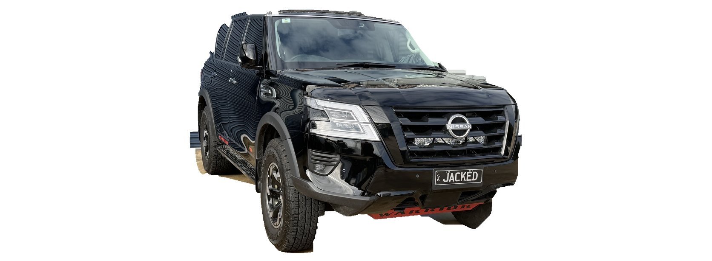
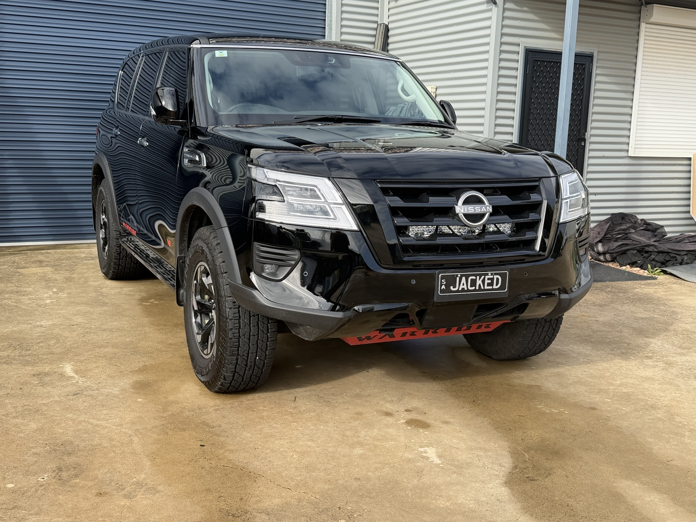

Y62-F34-V1 · Candidate 02
master-draftowner-sourcetransparent PNG1672×615RETURNED TO WF3NOT CUSTOMER VISIBLE

What advanced
Candidate 02 is the first real alpha-isolation preflight derived from the owner's exact 2025 Series 5 Y62 Warrior. It uses the primary owner F34 photo and preserves source geometry with uniform scaling only: no perspective warp, replacement bodywork, guessed wheel geometry or invented accessories.
This is review evidence, not a canonical production master. Alpha presence now passes, but clean isolation and neutral reconstruction do not.
Gate result
| Gate | State |
|---|---|
| Owner identity | Pass |
| Factory wheels / Warrior stance | Pass |
| 1672×615 + alpha channel | Pass |
| No invented geometry/accessories | Pass |
| Clean transparent isolation | Fail |
| Compositing edge quality | Fail |
| Neutral reconstruction / reflections | Fail |
| Locked-profile overlay | Hold |
| Direct photo-derived production rights | Hold |
| Reviewer master approval | Not eligible |
Why it is not promoted
The candidate still contains visible source-scene contamination around the isolation boundary and retains photographed reflections/source-scene appearance. That makes it unsafe for accessory-layer compositing and prevents it being treated as a clean canonical reconstruction. The customer resolver therefore continues to see this view as missing rather than falling back to draft imagery.
Primary owner references



Candidate history
Candidate 01 remains the background-preserving owner-source geometry board used to lock authenticity and camera-family discussion. Candidate 02 advances the lane by proving a real alpha/isolation workflow while exposing the remaining cleanup and reconstruction blockers. Neither is production eligible.
Next WF3 dependency
Produce a clean reference-backed F34 reconstruction or professional isolation/retouch pass that removes source-scene contamination without inventing body, fascia, wheel, tyre or stance geometry. Then score that asset against Y62-F34-V1-OVERLAY-01, record direct production-binary rights, and submit it to the identified reviewer workflow. SIDE and R34 stay queued behind this F34 gate.